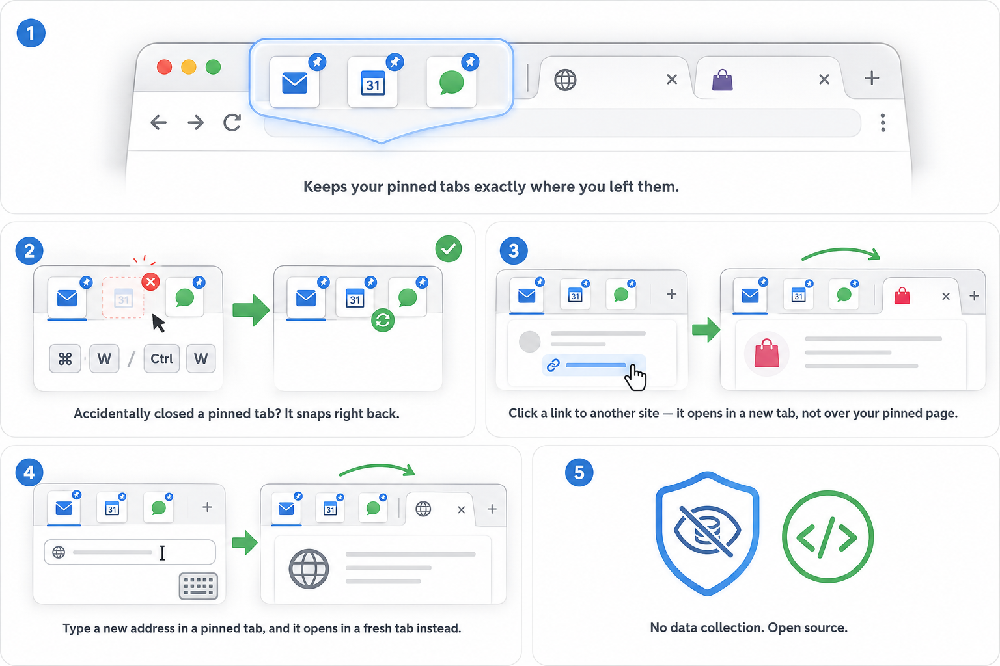

Besser Pinned Tabs
Chrome extension — version 1.1.0
Besser Pinned Tabs protects your pinned tabs against accidental closure and stops a pinned tab from being replaced by a different website. It runs silently in the background and needs no configuration.
What it does

- Keeps your pinned tabs exactly where you left them. Your pinned tabs stay at the left of the tab strip, showing the site you pinned.
- Accidentally closed a pinned tab? It snaps right back. If a pinned tab is closed — with Cmd-W, Ctrl-W, the close button or the context menu — the extension reopens it at the same position with the same address.
- Click a link to another site — it opens in a new tab, not over your pinned page. Links leading to a different domain are opened in a new tab next to the pinned one, so the pinned page stays put.
- Type a new address in a pinned tab, and it opens in a fresh tab instead. Entering an address for a different domain in a pinned tab’s address bar opens that site in a new tab.
- No data collection. Open source. The extension collects, stores and transmits no browsing data. Its full source code is public.
Technical limitations
These are consequences of what a Chrome extension is technically allowed to do. They are not bugs, and they cannot be fixed from within the extension.
A closed pinned tab is restored, not prevented from closing
Chrome gives extensions no way to veto a tab being closed. What actually happens is that the tab closes and the extension immediately reopens it at the same index with the same address. In practice it looks like the tab never left, but the page is reloaded: scroll position, unsaved form input and other in-page state are lost.
Intercepted links can make the pinned page reload
For the same reason, a cross-domain navigation is not blocked before it starts. It is detected as it begins and then reverted, which can cause a brief flash or a reload of the pinned page. This is the trade-off for the extension not requiring permission to read the content of the pages you visit.
Internal browser pages are not protected
Navigation on Chrome’s own pages (chrome://, about:
and similar) is not intercepted, and neither is a window that starts up with a pinned
tab on such a page. This is deliberate: covering them would require broader
permissions than the extension asks for.
Only cross-domain navigation is intercepted
Links that stay on the same domain load inside the pinned tab, as they normally would. Clicks on the browser’s Home button are not intercepted either, because Chrome does not report them as a navigation the extension can act on.
Repeated redirects are allowed through
Some sites redirect through another domain, typically for sign-in. To avoid opening an endless series of new tabs, the second attempt to reach the same domain in a given tab is allowed to proceed in the pinned tab.
Other Chromium-based browsers. This extension is developed and tested for Google Chrome. Third-party browsers built on Chromium (Brave, Vivaldi, Helium, and others) implement tab and navigation behaviour in their own way, so the extension may behave differently there. Problems that occur only in one of those browsers are best reported to that browser’s own community — they cannot be resolved from the extension’s side.
Privacy
Besser Pinned Tabs collects no data whatsoever. Nothing is sent anywhere. The only thing it stores is a local list of your pinned tabs’ addresses and positions, kept in the browser so the extension keeps working after Chrome suspends it in the background.